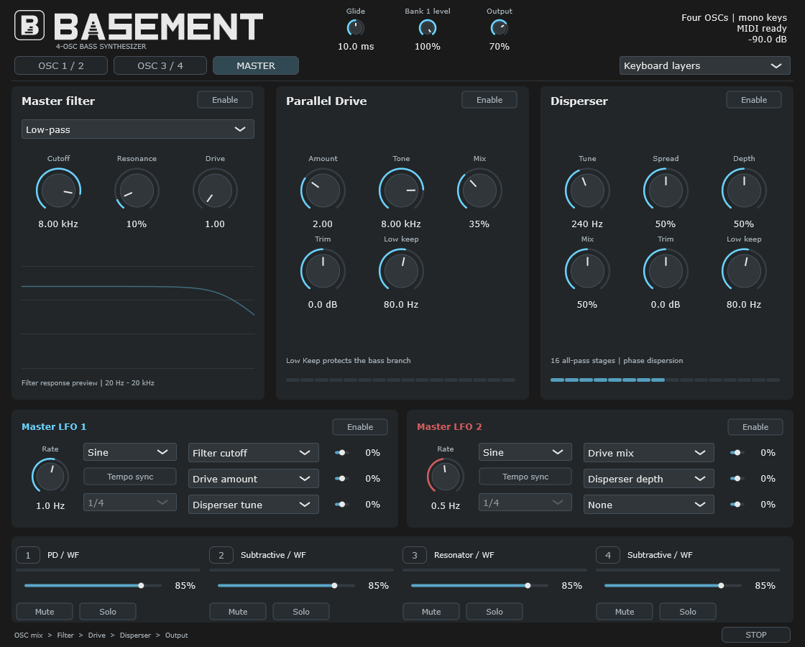

Windows x64 / VST3
BASEMENT
BASEMENT is a MIDI-played bass synthesizer with four oscillator layers. Choose phase distortion, FM, resonator or subtractive synthesis, balance the layers in the mixer, and shape the result with master filtering, Parallel Drive and Disperser.

Features
- 01Four oscillator layers with selectable synthesis engines
- 02Keyboard layers, independent slots and legacy-pair modes
- 03Per-layer pitch, envelopes, level, mute and solo
- 04Bank LFOs and master LFO routing
- 05Master filter, Parallel Drive and Disperser
Interface views

